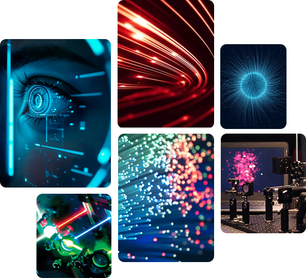
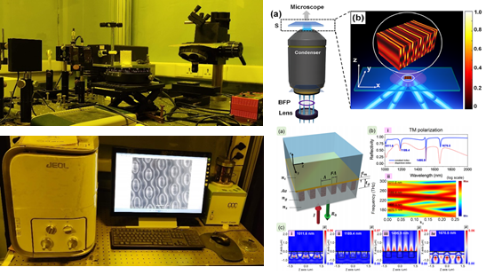
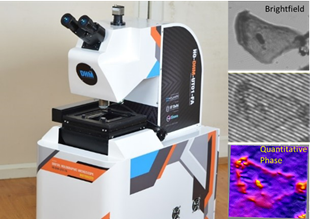
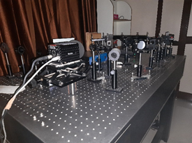

Academic Programes
The Centre will have primarily Ph.D. Research and M.Tech. and M.S. (Research) Programs.
- (i) Ph.D. Program: Ph.D. program that caters to both fundamental and applied research, with emphasis given to interdisciplinary nature of the subject. Students with varied background such as physics, engineering and biological sciences would be trained in relevant areas.
- (ii) M.Tech. and M.S.(R) Programs are being planned and are likely to be introduced from the next academic year.

Research Areas
The Centre is currently focusing on the following five research theme areas, with further details as:
Lasers & Guided wave optics:
Lasers, High Power Lasers and laser optics, Laser Systems and Applications in Medicine, Defence, Communications (including VLC), and Manufacturing, Guided wave optics, Fiber optics and Optical communication, Integrated optics, Fiber lasers and amplifiers, specialty fibers and sources.
Optical Engineering:
Geometric optics, Optical design, testing and fabrication, Micro-optics, Large-size Optics, Optical Instrumentation, measurement, and metrology, Optical devices and sensors. Illumination Engineering, Lighting and optical sources and radiation measurement (photometry, colorimetry and radiometry), Adaptive Optics, Free-space optics, Physical and Statistical optics, Wave propagation, Singular optics, Polarization optics, Diffractive and micro-optics, freeform optics, Atmospheric, oceanic and space optics, Scattering, Remote sensing (LIDAR) and sensors.
Imaging, Sensing and Biophotonics:
Fourier optics and optical signal processing, Holography, Image processing, Machine vision, Optical data storage, Computational Imaging and Sensing, Imaging systems, Microscopy, Augmented Reality (AR)/Virtual Reality (VR) & Mixed Reality (MR)- 3D display, vision and communication technology, Bio-medical optics and biophotonics, Vision, color, and visual optics, Nanoscopy for biological samples, Biosensors.
Nanophotonics
Nano-photonics, Plasmonics, Photonic Metamaterials, Photonic crystals, Optics at surfaces, Micro-/Nano-Optics, OE-MEMS, Optical Materials, Detectors, Optoelectronics, Liquid crystal photonics, Spectroscopy, Polymer Photonics, Green Photonics, Silicon photonics, solar cell optics, sunlight harvesting.
Ultrafast and Quantum Optics:
Nonlinear optics and applications, Terahertz optics and photonics, IR & Mid-IR Optics, Ultrafast optics, Extreme Optics, Atomic and molecular physics, Quantum Integrated Photonics, Quantum Information, Quantum Technologies
Laboratory Facilities

Photonics Research Laboratory
The Photonics Research Laboratory lead by Professor Joby Joseph is currently involved in research and developmental activities in areas such as: phase controlled 3-D interference lithography for fabrication of large area photonic structures, studies on photonic resonant structures for biosensing and other applications, Design and fabrication of photonic metamaterials and metasurfaces, Super resolution optical imaging using structured illumination, Shock-wave analysis using Schlieren and shadowgraphy techniques etc. Experimental facilities available include: 1D, 2D, 3D Interference Lithography setup, JEOL Tabletop SEM, Femtofiber laser, He-Cd Laser 325 nm and 442 nm, Coherent Genesis laser 355nm, Toptica blue mode laser 405 nm, He-Ne laser 632.8nm, Cobolt samba lasers 532 nm, Holoeye Spatial Light Modulators, UV-VIS spectrometer, Spin Coater, Hot plates, Digital Balance, Centrifuge systems, Box furnace, 3D Printers etc.

Computational Optics Laboratory
The computational imaging laboratory headed by Prof. Kedar Khare works on novel imaging concepts that use optical design and advanced reconstruction algorithms to realize unprecedented imaging performance beating traditional limits in terms of resolution, accuracy, imaging speed, field-of-view, etc. A number of successes over the last several years include system concepts based on our optical phase reconstruction and phase engineering algorithms that allow imaging with “incomplete” data. Collaborative work with other departments at IIT Delhi including CBME and KSBS has also yielded number of novel results with important system implications. A high resolution phase microscope product has recently been introduced commercially through our efforts – the first full-fledged unit is now installed in IIT Delhi’s Central Research Facility (CRF) for generic use. The microscope provides full-resolution holographic 3D images of live cells and has number of applications in basic bio-sciences as well as diagnostics.

Singular Optics Laboratory
The Singular optics Laboratory lead by Professor P. Senthilkumaran is active in Physical optics research. Current research activities are in the areas of phase and polarization singularities, correlation optics, interferometry, diffractive optics, polarization optics and topological aspects of light fields. The group is also actively engaged in the design and fabrication of elements for laser beam shaping, spectral beam combining and structured beam generation. It is also involved in non-destructive optical testing and metrology. In collaboration with various other labs this group also carries out research in statistical optics, beam propagation, imaging, photonic crystals and in bio-medical optics. Some of the experimental facilities available in this laboratory are: all type of interferometers, Stokes camera, He-Ne lasers, various diode lasers in the 1030-1100nm wavelength range, spatial light modulators, spiral phase plates and q-plates, laser beam profilers and Arcoptic tunable phase retarders.